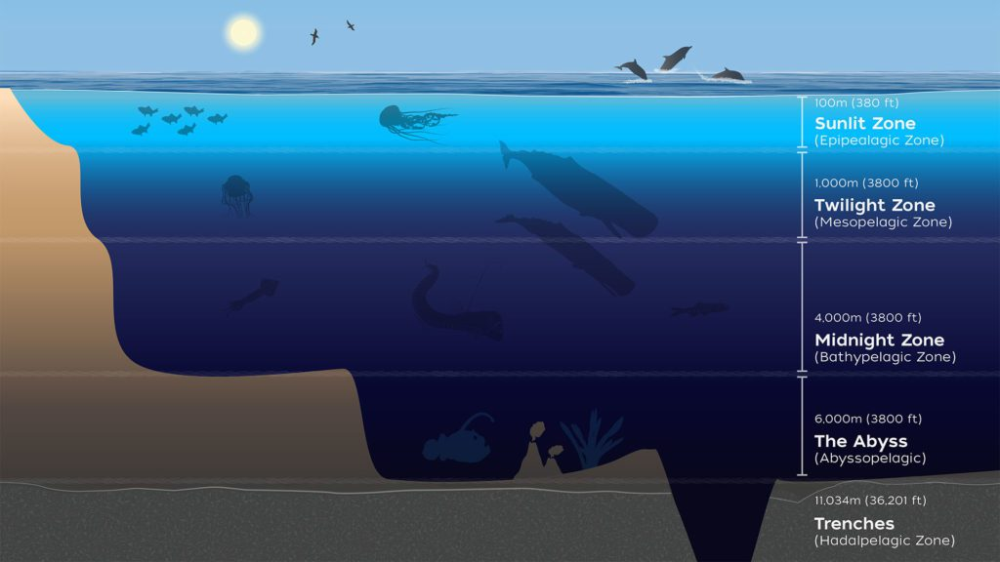
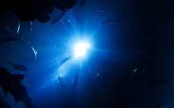
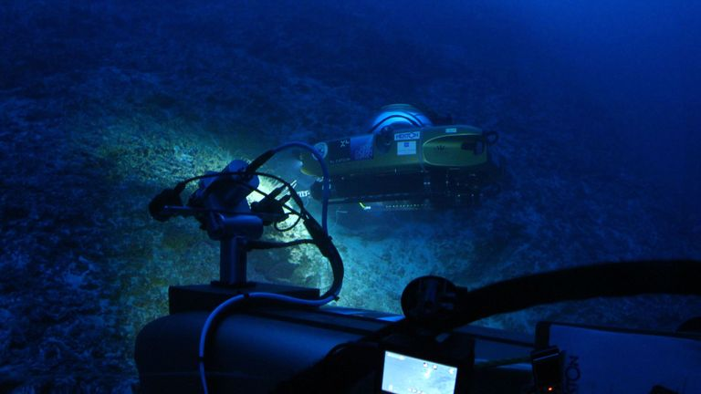
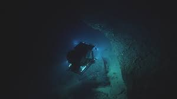

🌊 Exploring the Deep Sea & Twilight Zone
The deep sea — stretching beyond 200 meters — is one of the least explored frontiers on our planet. Cloaked in darkness and subjected to crushing pressures, this mysterious region contains ecosystems and lifeforms more alien than anything found on land.
Within this abyss lies the fabled Twilight Zone, a dimly lit realm where science fiction meets reality. Studying this world is more than discovery — it's a race against time to protect what we barely understand.
- Over 80% of the ocean remains unexplored
- Pressure can exceed 1,000 times that at sea level
- Temperatures drop to near freezing
From bioluminescent creatures to hydrothermal vents, the deep sea is a treasure trove of biodiversity and geological wonders. Yet, it is also one of the most threatened ecosystems on Earth, facing challenges from climate change, pollution, and overfishing.
This page aims to shed light on the deep sea's mysteries, the significance of the Twilight Zone, and the cutting-edge technologies enabling us to explore this hidden world. We will also highlight the unique species that call this realm home and the challenges they face.
Join us as we dive into the wonders of the deep sea and uncover the secrets of the Twilight Zone.
🌘 What is the Twilight Zone?
Known scientifically as the mesopelagic zone, this region lies between 200m and 1000m underwater. Here, light from the surface fades into obscurity, creating an eerie semi-darkness filled with flickering bioluminescent creatures.
This zone plays a pivotal role in climate regulation, carbon cycling, and food chains that affect life all the way up to the surface. It is estimated to contain 90% of the world’s fish biomass — mostly small, light-emitting fish like lanternfish.
The Twilight Zone is also a critical area for studying climate change, as it acts as a carbon sink, absorbing CO2 from the atmosphere and storing it in the deep ocean.
🌐 Did you know? The Twilight Zone stores more carbon than all of Earth’s forests combined.
🔍 Modern Exploration Techniques
Venturing into these depths requires more than courage — it requires technology. Remotely operated vehicles (ROVs), deep-diving submersibles like Alvin, and satellite-linked sensors are pushing the limits of what we can observe and understand.
Cutting-edge AI is being embedded into underwater drones to allow autonomous navigation and real-time data collection — helping scientists track species, temperature shifts, and even microplastic movement.
- DSV Alvin – First crewed vessel to explore hydrothermal vents
- ROV Jason – Offers real-time exploration capabilities
- Nereus – Reached the Challenger Deep
These technologies are not just tools; they are our eyes and ears in a world that remains largely hidden from human experience.
“The ocean is a world of wonders, and we are only beginning to understand its depths.” – Dr. Sylvia Earle
The exploration of the deep sea is a testament to human ingenuity and our relentless quest for knowledge. Each dive reveals new mysteries, from hydrothermal vents teeming with life to vast underwater canyons that rival the Grand Canyon in scale.
🐙 Rare and Bizarre Species
Imagine a world where light is produced by biology, not the sun. Creatures like the glass octopus, gulper eel, and the iconic anglerfish thrive by evolving incredible adaptations — from complete transparency to vacuum-like jaws.
These organisms have helped researchers design everything from stealth camouflage materials to robotic vision systems — proof that Earth’s wildest ideas often come from the deep.
Anglerfish 🎣
Uses a glowing lure to attract prey in pitch darkness.
Glass Octopus 🐙
Nearly transparent and rarely seen, it’s a marvel of deep-sea stealth.
Dumbo Octopus 🐘
Flaps ear-like fins to navigate the ocean floor gracefully.
These species are not just fascinating; they are vital indicators of ocean health and resilience. Studying them helps us understand how life adapts to extreme conditions and what that means for our planet.
The deep sea is a treasure trove of biodiversity, with an estimated 230,000 known species and potentially millions more yet to be discovered. Each new find adds a piece to the puzzle of how life evolved and adapted in one of Earth’s most extreme environments.
“The ocean is a living library of evolution, holding secrets to our past and future.” – Dr. Edith Widder

⚠️ Challenges & Discoveries
Deep-sea exploration is dangerous and expensive. Pressures exceed 1000x that at sea level, and vehicles must be engineered to survive the crushing depths while relaying data across kilometers of dark water.
Yet we persist. Discoveries of hydrothermal vents, methane seeps, and entire new phyla of animals are expanding our understanding of evolution and Earth’s history. We're not just looking into the ocean — we're looking back in time.
- Hydrothermal vents emitting mineral-rich fluids
- Discovery of new species and microbial life
- Potential new antibiotics and climate clues
The deep sea is a treasure trove of knowledge, holding secrets that could unlock new technologies, medicines, and insights into our planet’s past and future.
As we face challenges like climate change, pollution, and overfishing, understanding the deep sea becomes crucial. It is a vital part of our planet's ecosystem, influencing weather patterns, carbon cycles, and global biodiversity.
The deep sea is not just a remote frontier; it is a critical component of Earth's health. Protecting it is essential for the survival of countless species, including our own.
“The ocean is the last great wilderness on Earth, and we must protect it.” – Dr. Sylvia Earle